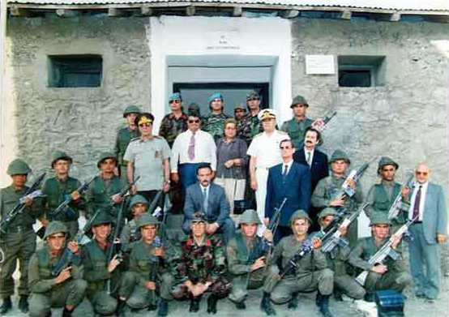

Özal’ı Bize Tanıştıran 19 Şehit;
92 Helena (Alan) Çatışması

Bizim taktik intikalle Helena’ya gidişimiz ve Çimen Dağı’nın gölgesinde Şemdinli’ye dönüşümüz 92’nin Temmuz sonu, Ağustos ayı başlarına rastlar. Bu resim de aynı yılın Eylül ayı başında çekilmiştir. Bu resimde devlet vardır, devlet var ama neden geldiler ki Helena’ya? Onları Helena’da buluşturan neydi?
Resimdekiler yabancınız değil; ortada beyaz gömlekli ve gözlüklü Turgut Özal, dönemin Cumhurbaşkanı. Hemen sağındaki üniformalı olan Orgeneral Jandarma Genel Komutanı Eşref Bitlis. Keşke sağ olsalardı da bu satırları okuyabilselerdi ama her ikisi de vefat etti. Solundaki hanımefendi ise Semra Özal, cumhurbaşkanının eşi. O’nun yanında Genel Kurmay Başkan Vekili, hemen aşağısında ise Olağanüstü Hal Valisi. Diğerleri de devletin önemli kişileri, mülkiyeden askeriyeden. Alt ortada kırmızı ispoletli Korgeneral Necati Özgen, Jandarma Asayiş Komutanı. Onun hemen yukarısındaki ise Şemdinli Kaymakamı Seyfullah Hacımüftüoğlu, desteğimiz, güvencemiz. Kalanlar ise bizler; ülkesine, bayrağına, insanına kendini adamış, terörü de teröristi de bitirmeye yemin etmiş olan bizler. Yeminimiz yeminimizdir; o yıllarda tutamamış olsak da, Allah yaşayacak yıllar versin, bu yemin elbet bir gün tutulacak, ya biz ya da çocuklarımız bu hesabı soracak ve bu teröristlerin dağdakileri de yerdekileri de bu hesabı verecek!
Şemdinli’den bıkmayınız, onu anlayınız; onu tanımadan terörist coğrafyasını tanıyamazsınız. Size sunduğum bu resimden de bıkmayınız, iyi bakınız, bu devletin resmidir, bu resimde devlet vardır. Devlet var iken nasıl oldu da biz onca şehit verdik, anlatmalıyız size bunu. Teröristten bıkmayın, onlar bizim teröristlerdir, başkasının değil. Nasıl ki şehide ağlıyorsanız, onları şehit eden hainleri de tanımak zorundasınız, hesap sorabilmek için. Kaçakçılık olayları da sizi bıktırmasın, teröristin kalbidir o; söküp alırsanız, mücadeleniz kolay olur, şehit vermezsiniz. Gerçekleri söylemekten de, dinlemekten de korkmayınız. Muhatabı kim olursa olsun söyleyiniz, kimse kaçamaz, gerçeklerden, mücadelenin esası da gerçeklerde yatar, unutmayınız.
Türk devletinin büyükleri sizce neden Helena’da toplandı? Acı bir hikâye bu ama anlatayım. Bu teröristler, iki sözcük kazandırdı bize, farklı anlam taşıyan iki kelime; biri yılan diğeri kum. Şemdinli halkı, “kum gibi” tabirini terörist sayısını ifade etmek için kullanır. Eğer size gelip de; Komutanım, teröristler Hakurki’de hem de kum gibi, diyorsa eğer, biliniz ki bu sayı bin ila beş bin arasında değişir. Kaç kişi bunlar, kesin bir sayı ver, derseniz, asla bu sayıyı tespit edemezsiniz. Onlar için arazide gördükleri teröristi, sayı olarak ifade etmek mümkün değildir. Kum gibi, diyorlarsa eğer biliniz ki çok kalabalıklardır hem de tahmin edemeyeceğiniz kadar çok.
Gene Şemdinli halkı, “Yılan gibi” tabirini arazide hareket eden teröristler için kullanır. Nasıl ki yılan bir tepeye çıkar ya da inerken kıvrıla kıvrıla bir “S” çizerek hareket ediyorsa, teröristler içinde aynıdır; bir tepeye dik tırmanışla çıkmaz ve de inmez. Yılan gibidir onlar, sağa sola zikzak çizerek iner ve çıkarlar. Yılan gibi diyorlarsa eğer, biliniz ki teröristler hareket halindedir, eylem için, intikal için, yer değiştirmek.
Biz Alan’dan yani Helena’dan döndükten sonra aldığımız ilk haber, teröristlerin kum gibi olduklarıydı, Hakurki’de ya da Hakurke’de. İkinci haber ise, teröristlerin Ari Gediği’ne, Zagros’a, Gelyaraş ve Kanyaraş’a yılan gibi tırmandıkları oldu. Ağustos ‘92 ortalarında aldığımız son haber ise, teröristlerin on beş - yirmi kişilik gruplarla Şemdinli üçgenini çevirmeye başladıkları oldu.
Terörist için çevirme ne demektir? Doğuda Şehidan Dağı’nda tertiplenmeleri; hedefin Durak karakolu olduğunu, Kralın Kızı ve Dumanlı Dağ’a yerleşmeleri; hedefin Alan yani Helena karakolu olduğunu, Kanyaraş, Gelyaraş, Ari, ve Balkayaları tutmaları; hedefin Derecik, Umurlu, Yeşilova ve Samanlı üs bölgelerinin olduğunu, Çarçele, Basyan ve Leylek Dağı’nda görülmeleri; Aktütün’e saldıracakları, Beyaztaş Tepe, Beyaz Dağ, Gomane Tepe’ye yerleşmeleri ise Şemdinli’ye eylem yapacakları anlamına gelir. Peki, bu sayılanların hepsinde terörist görülürse, sizce bunun anlamı ne olabilir? Anlamı şudur; o tarihte Şemdinli’de her yer teröristler için eylem hedefidir ama sıra kimdedir işte o bilinmez.
Ağustos ‘92 ortaları itibariyle teröristlerin görüldüğü, yerleştiği, tertiplendiği, yayıldığı bölgeler bunlardı. Sayıları ise kum gibi! Yürüyüşleri ise yılan gibi. Yerlerini az çok biliyorduk. Genelde İran ve Irak sınır boylarıydı bu yerler ama müdahale edemiyorduk çünkü sınır ötesine geçmek bizim için yasaktı. Silahları konusunda fazla bir bilgimiz yoktu. Kaleş dedikleri kaleşnikof piyade tüfeği zaten herkes de vardı, teröristlerde de ama ya diğer silahları; roketler, makineli tüfekler, havanlar, keskin nişancı tüfekleri, işte bunları bilmiyorduk. Yıl 1992, aylardan Ağustos. Bunlar bizim bildiklerimiz. Peki ya devlet, devlet bu konuda neler biliyordu?
O dönemin en güçlü istihbarat örgütü JİTEM, bu örgütün en güçlü ismi Binbaşı Cem Ersever’di. Bizim devletimizde istihbarat; başta Milli İstihbarat Teşkilatı, sonra Jandarma Genel Komutanlığı, Emniyet Genel Müdürlüğü ve Genel Kurmay Başkanlığının istihbarata ayrılmış birimleri tarafından yürütülür. Batıda istihbarat temini kolaydır; uyuşturucu kullananlar, kumarbazlar, fuhuş yapan ve yaptıranlar, kaçakçılar, kısacası kirli ve karanlık işlerle uğraşanların hemen hemen hepsi istihbarat örgütleri için bir elemandır. İstenilen haberi temin edemezlerse faaliyet alanları yok edilir, bunu da hepsi bilir. Bu haber toplama şekli oldukça yaygındır ve başarıya da çoğu zaman ulaşır. İstihbarat muhbiri ortaya çıkarsa, orta bir yol bulunur, ceza kesilir, sonuçta araya hatırı sayılı kişiler girer, anlaşma sağlanır ve muhbir ölümden kurtulur. Peki ya doğuda? Doğuda bu iş nasıl olur?
PKK için muhbirliğin cezası ölümdür. Kaçak ağaları için muhbirliğin cezası ölümdür. Halk bunu iyi bilir, dolayısıyla doğuda kolay kolay doğru haber toplayamazsınız. MİT ne yapar; köylerden ayda bir şehre gelen insanlardan eleman temin eder, belli bir aylık öder, aldığı haberleri Başbakanlığa ulaştırır ama teyidi oldukça zordur. Emniyet ne yapar? Onların işi MİT’ten daha kolaydır, yüzlerce iş için karakola gelen insanlar vardır, biri değilse öbürü size haber verir ve dışarıdakiler kimin eleman olduğunu, kimin muhbirlik yaptığını kolay kolay tespit edemez. Ama polis bölgesi belediye hudutları ile sınırlı olduğu için, toplanan haberler de bununla sınırlı olur.
Genel Kurmay haber kaynakları resmi kaynaklardır; MİT’ten, polisten, jandarmadan ve de garnizon komutanlıklarından gelen haberler burada değerlendirmeye alınır. Geriye JİTEM kalır. JİTEM denince akla Binbaşı Cem Ersever gelir.6 Belki de haber kaynağı en fazla olan, bizzat arazi istihbaratı yapan, haberi kaynağında toplayan Ersever’dir. Şimdi soru şu: 1992’de teröristlerin Şemdinli’yi kuşatma altına aldığını devlet yani o dönemin yöneticileri biliyor muydu?
Ersever diyor ki; PKK çeteleri 1950’li yıllardan beri Kuzey Irak atanım üs bölgesi olarak kullanıyordu. Yurt içine yaklaşık 10 - 15 kilometre derinliğindeki eylemlerinin ana üs bölgesini Kuzey Irak, Sinath, Avagözc, Pirbela, Banık, Marsis, Kıshan, Haftemin, Ari, Basyan, Durjan ve Hakurk köyleri ile kırsalı teşkil ediyordu.7
Abdullah Öcalan diyor ki; Şemdinli baskınına birliklerimizi Lolan’da hazırladık. Barzani ile irtibatımız vardı.8
Sarızeybek diyor ki; ‘92 Şemdinli baskınları Hakurk, Basyan, Ari ve Şehidan PKK üs bölgelerinden yapılmıştır.9
Ersever JİTEM komutanı, Sarızeybek ‘92 Şemdinli Tabur Komutanı, Öcalan ise bölücü PKK örgüt başıdır. Ne acıdır ki üçü de aynı şeyleri söylemektedir, yani 80’li yıllardan bu yana PKK Irak kuzeyini üs ve saldırı bölgesi olarak kullanmıştır ve hâlâ da kullanmaktadır. Peki bizi yönetenlerin ve istihbaratın başındakilerin bundan haberi yok muydu? Bu soruların cevabı ile devletimizin Alan Karakoluna’na geliş nedenleri birbiriyle çok yakın ilişkilidir, ilkinde göreceğiniz gaflet, Alan’daki 19 şehitle ihanete dönüşecektir, unutmayınız.
Biz ‘92 Ağustos’undayız ve ayın son günleri yani 30 Ağustos.
Yaklaşık 300 kişilik bir terörist gurubu 28 Ağustos gecesi Hakurk’tan yola çıkıp 2801 Rakımlı Tepe’nin güneyinden geçerek Zagros çadırlı kampına geldiler. Gece yürüdükleri için hava serindi, zorlanmadılar. Burada iki kola ayrıldılar; birinci kol kuzeye, doğru İran sınırını takip ederek Alan karakolu’nun İran tarafındaki tepelerin ardında mola verili. İkinci kol ise aynı yolu takip ederek Dumanlı Dağ’a çıktı, karakolun hemen üstüne. Onlar da mola verdi ve gözetlemeden çıkarıp istirahate çekildiler. Her iki kolun da hedefi Alan Karakolu’ydu. Birinci kolun görevi, karakolun güneyindeki Domuz Tepe’nin karşısındaki hakim sırtları tutmak, sabaha karşı yoğun roket ve makineli tüfek atışlarıyla mevzilerinde nöbet tutan askerler arasında şok ve baskın tesiri yaratmaktı. İkinci kol ise, Dumanlı Dağ’dan batıya doğru kayıp Helena ve Kayalar köylerinin yollarını kesmek, Helena - Şemdinli arasında pusu kurup mayın döşemek suretiyle takviye gelmesini önlemek ve Helena Köyü’ne bakan sırtları tutup karakolu çember altına almakla görevlendirilmişti. Dedikleri gibi, planladıkları gibi, hedefledikleri gibi 30 Ağustos saat beşi gösterirken karakol sessizce çembere alındı. Sert esen rüzgâr askerin görüşünü olumsuz etkiliyor, çıkan sesleri duymasını engelliyordu. İran’dan gelen teröristlerden kimsenin haberi olmadı.
Hainlerin saldırısı saat beş gibi başladı ve ilk ateşi Domuz Tepe etrafındaki teröristler başlattı; roket ve makineli tüfek atışlarıyla. Bu arada aynı koldaki bir grup terörist sessizce askerlerin mevzilerine sürünerek ilerliyor ve yakın bir mesafeden el bombası atarak askerimizi şehit ediyordu.
Şemdinli yolu üzerinde pusu kurmuş ve mayın döşemiş teröristler sabırla takviyenin gelmesini bekliyordu. İkinci kol ise, yolları kesmiş, neredeyse ayakta karakola doğru ilerliyordu. Saat 07.00’yi gösterirken Alan Karakolu’ndaki manzara buydu.
Türkiye Cumhuriyeti’nin bir jandarma bölüğü neden bu duruma düşmüştü? İnceleyelim:
1984 Şemdinli baskını için dönemin Başbakan Özal şöyle diyordu: “Olaylarla ilgili olarak herhalde büyütecek bir durum yok, bir basit eşkıyalık, terör olayıdır, bastırılmıştır.”
Aynı olaylar için Milli Savunma Bakanı Safa Giray da; “Bu işi bitireceğiz, PKK’nın kökünü kazıyacağız” derken, sanki onu yalanlamak İçin aynı günlerde PKK otuzar kişilik gruplarla Mardin-Cizre köylerinde cirit atıyor, eylemlerden sonra da bir zamanlar Sancak dikilen Cudi Dağı’na, tabi yine gece karanlığından yararlanarak kaçıyorlardı.
İçişleri Bakanı Abdulkadir Aksu Temmuz 1990 tarihinde, nasılsa 5- 10 teröristin çatışmada Öldürülmesini bile en çirkin bir şekilde politikaya alet edebiliyordu. “Özal Güneydoğu’ya huzur getirdi” derken yıllardır akan kanlara, yakılıp yıkılan köylere ve göç eden yüz binlerce insana karşın sanki bu olanlarla alay eder gibiydi, işte böyle diye diye, 1984’te birkaç yüz kişi ile yola çıkan PKK, 1991’de bu yönetim giderken on bin kişiyi aşıyordu.10
Alan Karakoluna 30 Ağustos sabahı bu hale düşüren zihniyetlerin biri budur. Sanki bu yöneticilerin Iran - Türkiye sınırlarında PKK’nın kamp kurduklarından haberi yoktur! Şemdinli hemen güneyindeki Hakurk, Durjan, Lolan, Ari ve Basyan’da da kamp kurup binlerce çocuğu terörist yaptıklarından da haberi yoktur! Bu yöneticiler PKK’nın önce Barzani ile sonra Saddam’la, daha sonra da yeniden Barzani ile anlaşma yapmış olduklarından da haberi yoktur! Öyleyse eğer, Binbaşı Cem Ersever neden JİTEM komutanlığı yaptı, elde ettiği istihbarat neden değerlendirilmedi, neden 93’te “Üçgendeki Tezgâh” isimli kitabı yazmak zorunda hissetti kendini ve aynı yıl neden öldürüldü?
Alan Karakolu 30 Ağustos sabahına birden gelmedi, yüzlerce PKK’lı da gökyüzünden bir anda inip Alan Karakolu’nu aniden çevirmedi? Bunlar sayılar ve yerler, gelelim silahlara... Bu teröristlerin bir anda binlerce silaha sahip olduklarını düşünmüyorsunuz herhalde? Peki ya para, hani şu kara olan, onca parayı da bunlar bir anda bulmadı herhalde? Umarım bunların bir anda terörist olduklarını da düşünmüyorsunuz-dur? En iyisi sizinle birlikte bu hainlere karşı çatışmaya girelim ve önce görelim bakalım bunlarla çatışma nasıl olur? Şemdinli’deyim. Terörist haberi saat beş gibi geldi. Ve yola çıktık altı kişiyle.
Öyle bir patlama oldu ki, şaşırdım, düşünemez oldum. Dumanlı dağdan gelen ikinci terörist kolunun pususuna düşmüş ve döşedikleri mayına basmıştık. Dost Çimen’in yapabileceği bir şey yoktu çünkü biz yanında değildik. Ardından roketler gelmeye başladı, tek tek. Güçlü patlamalar zırhlı aracı beşik gibi sallıyordu. Kimse de haykırış yok, panik yok, beş asker mazgala uzanmış sessizce ateş ediyordu. Bir asker yere düştü, vurulmuştu. Arkadaşları yardım etmeye çalıştı, bir yandan ateş ederken. Bu arada Dumanlı Dağ’dan gelen teröristlerin ikinci kolu roket ve mermi yağdırmaya devam ediyordu. Şoför bir gayretle aracı yeniden çalıştırdı, hareket edip pusu bölgesini geçti. Karakol Komutanı Hamza Üsteğmen telsizde bağırıyordu: “Komutanım sola dönün, sola dönün atış alanına doğru.”
Dönmemizle birlikte on kadar teröristle karşılaşmamız bir oldu, ayakta karakola geliyorlardı, ateş ederek, roket atarak. Öndeki birkaçının üzerinde askerin hücum yeleği vardı ve de çelik başlığı, şehitlerimizden çalmışlardı demek. Kirli sakallarını gördüm, kirli ve dağınık saçlarını. Sonra tek tek devrildiler. Biraz daha ilerleyince on beş kadar teröristin yaklaşık yüz metre öteden bize doğru geldiğini gördüm. Elimdeki tüfek bombalarını tek tek attım. Eğildiler, sonra görünmez oldular.
Ne kadar çok terörist vardı, biri kaybolurken diğeri çıkıyordu. Ben MG-3 otomatik tüfeği sevmem ama hayret, hiç tutukluk yapmadan 3.200 mermi atmıştı teröristlere doğru hem de hedefi şaşırmadan. Çatışma saat sabah beş gibi başlamıştı. Tek tük mermi seslerini duyduğumda saate baktım, on ikiyi gösteriyordu, demek yedi saattir sürüyordu çatışmalar. Teröristlerden arta kalanlar ise, kaçtılar İran’a. Benim yanımdaki bir asker hani pusuya düştüğümüzde yaralanan, şehit olmuştu. Karakol mevzilerinde ise, çatışmaya giren on sekiz asker şehit düşmüştü, bakamadım yüzlerine içimdeki acıdan.
Teröristlerden geride kalan silahlara baktım, hayret, hiç görmemiştim böyle silahlar. Sonradan öğrendim ki bunlar; RPG-7 Roketatar, Kannas Keskin Nişancı Tüfeği, Bikeysi Otomatik Tüfek idi, kimi Rus yapımı, kimi Çin yapımı. Ama ne garip silahlar bilemezsiniz, çamurun içine koy, ateş et, patlıyor. Bin metreden nişan al, tetiği çek, vuruyor. Bir dakika içinde beş yüz metreden üç roket at, atıyor ve patlıyor, hem de ne gürültüyle. Bizdeki G-3 de iyidir, iyidir ama geri tepmesi çok. Tek elde seride ateş edemezsiniz, etseniz de hedefi vuramazsınız geri tepmesinden ötürü. MG-3 de iyidir ama toza karşı hassas. 89 mm.lik roketatarı ne siz sorun ne ben söyleyeyim; manyetolu, ikinci dünya harbinin eskisi gibi bir şey, çoğu kez ateş almaz. Ne yalan söyleyeyim, teröristlerden ele geçirdiğimiz silahlar iyiydi, güzeldi ama el bombaları kötüydü, Rus yapımı, eski, kimi patlar kimi patlamaz. Bizim Amerikan yapımı el bombalarımız ise daha iyiydi onlardan, en azından atıldığında çoğu kez patlıyordu.
Sonradan öğrendim ki, bu silahlar Kuzey Irak’ın Erbil şehrinde açık pazarda satılıyormuş. Gene öğrendim ki, teröristlerin ana karargâhı Hakurk’muş ve Temmuz ‘92 itibariyle beş binden fazla terörist varmış. Gene öğrendim ki, İran ve Irak sınır boylarını teröristler tutmuş, her kaçaktan sözde gümrük adıyla haraç alıyorlarmış, çok para eder bu. Hayret, nasıl olmuş da kimsenin haberi olamamış?
Bu silah meselesi önemli, birinin çıkıp anlatması ve bize cevap vermesi gerek. Önce Ersever’i dinleyelim: “APO ve adamları 1991 yılı bahar ayları boyunca Kuzey Irak’ta talan ve çapul ile elde ettiği silah ve cephane gibi malzemeleri depoluyor, mevzilerini tahkim etmeye çalışıyordu.”11
Demek ki, 1992’de bizi şehit eden silahlardan haberimiz varmış. Ne acı! Emniyet ve asayişten sorumlu İçişleri Bakanlığı açıklasın bize; PKK’nın 1991’de elde ettiği silahlardan neden haberimiz olmamıştır, aynı silahları neden ve ne zaman aldık ve terörle mücadele eden birliklerimize ne zaman dağıttık? Bu soruların cevabı, bizim bunları neden yaşadığımızı da size açıklayacak. Gelelim şimdi Alan’a bizi görmek için gelen devlete.
Ankara Jandarma Harekât Merkezi nöbetçileri aynı gün saat sekiz gibi koşarak Kurmay Başkanı Korgeneral Erdinç Aygün’ün makamına geldiler:
- Komutanım. Alan Jandarma Hudut Bölüğü bu sabah saatlerinde çok kalabalık bir terörist grubun saldırısına uğradığını Hakkari Tugayından öğrendik. Tabur Komutanı altı kişiyle takviye gitmiş ama şu ana kadar ondan haber alamadık. Bölükle de irtibat kuramıyoruz, çatışma çok yoğun.
-Başka takviye unsurları gitmemiş mi?
-Kobralar bölgede ama UH-1 ve Skorsky helikopterleriyle havadan birlik atamıyoruz çünkü bölüğün etrafı teröristlerce çevrilmiş durumda.
Erdinç Paşa, Şemdinli’ye atamamızı yapan generaldi ve bizi tanıyordu. Şüphesiz bu duruma oldukça üzülmüştü ama bana söyleme fırsatı olmadı hiç. Erdinç Paşa bir an önce olayı öğrenmeye çalışıyor ve Komutan Orgeneral Eşref Bitlis’e haber verebilmek için acele ediyordu.
- Çevrede yardıma gidecek başka birlik yok mu?
- Şemdinli Dağ Komando Taburunun bir bölüğü Kayalar Köyü’nde konuşlu ancak teröristler yolları kesmiş, temas sağlanması an meselesi ama yardıma zamanında gitmeleri mümkün görülmüyor.
Çok sıkıntılı bir durumda; bir bölüğe takviye gönderememek ne demek! Bu nasıl izah edilebilir? Olumlu bir cevap alabilmek umuduyla son kez sordu Erdinç Paşa:
- Bu bölüğe yardım göndermenin hiçbir yolu yok mudur?
- Tabur komutanıyla yeniden irtibat kurmayı deneyeceğiz komutanım. Ondan bilgi alabilirsek, bir çözüm yolu bulunabilir.
- Peki, irtibat kurmaya çalışın.
Eşref Bitlis Paşa çok heybetli bir insandı; iri yarı, dağ komandosu, sağlıklı, kararlı, her zaman rastlanabilecek bir komutan değildi. Erdinç Paşa’yı makamında kabul etti. Olayı dinledi. Bir müddet sessiz kaldı ve:
- Olayı Genel Kurmay’a bildirin, dedi.
Hakkari Dağ ve Komando Tugay Komutanlığı telsizinde çok yoğun bir muhabere vardı. Tüm operatörler Şemdinli Taburu ve Alan Bölüğü ile irtibat kurmaya çalışıyorlardı.
Taburun yapacak bir şeyi yoktu zira o da tabur komutanından ve bölükten haber alamıyordu. Tugay Komutanı Utku Güney Paşa üzgün, çaresiz, olay yerinden gelecek umutlu bir haberi bekliyordu. Çaresizliğin sıkıntılı, ifadesi güç anları bu. Olayı haber alan Genel Kurmay’da da acil planlar devreye konuyor ama tabur ve bölük komutanlarından haber alınamadığı için ne yapılacağı hususunda kesin bir karar ortaya konamıyordu. Nihayet durum Başbakan Demirel ve Cumhurbaşkanı Özal’a bildirildi. Devletin tüm erkanı oturup çatışma bölgesinden gelecek haberi beklemeye başladı.
Nihayet beklenen haber altı saat sonra geldi. Teröristler önemli bir darbe almış, ancak bu çatışmada 19 şehit verilmişti. Bu kahraman şehitler PKK’nın sözde bayrağını karakoldaki Türk bayrağı gönderine çekmelerine izin vermemişlerdi.
Devletin büyükleri hep bir ağızdan derin bir Oh, çektiler. “Tik fırsatta bu karakola gidelim, olayı bir de yerinde inceleyelim,” dediler. Eylül ayı başlarında hepsi Alan Karakolu’na çıkageldi, bir anı fotoğrafı çektirdi ve gitti. Onlar gitti ama teröristler gitmedi, yine Hakurke’deydi, Basyan ve Jerma’da idi, hem de binlercesi.
Ben Özal’ı tanımam ama ismini duydum, çünkü 1992’de Cumhurbaşkanımızdı o bizim.
Kader bizi Alan Jandarma Karakolu’nda tanıştırdı. Özal, teröristlerin gerçekten İran’dan gelip gelmediğini merak ediyordu. Bunu öğrenmek için yanına Genel Kurmay Başkanı, Jandarma Genel Komutanı Orgeneral Eşref Bitlis ve OHAL Valisi Sayın Ünal Erkan’ı da alarak Şemdinli’nin Alan Jandarma Karakolu’na gelmişti.
Şişman, kısa boylu, gözlüklü, babacan bir insandı, nur içinde yatsın. Olayı ben anlattım ona; teröristlerin İran’dan gelip nasıl İran’a kaçtıklarını, kullandıkları silahların bizden üstün olduğunu, zırhlı araçların iyi iş yaptığını, kaçakçılığın terörü beslediğini, daha çok şeyler anlattım.
Özal’a anlattım, hepsini anlattım. Zaten Alan Karakolu ile İran sınırı arasında ne var ki, topu topu beş yüz metre. İran’dan geldiler İran’a gittiler, dedim. Silahlarını, silah pazarlarını, Hakurk’u, kaçakçılığı ve kaçağın terörü beslediğini anlattım. Ben neyim ki o zamanlar, bir binbaşı. Karşımda ki ise Cumhurbaşkanı. Ben tüm bildiklerimi anlattım. Anlattım da ne oldu? Hiç. Bir hafta sonra, teröristler Aktütün karakolumuza saldırdılar, 22 şehit verdik. On beş gün sonra Derecik karakolumuza saldırdılar, 33 şehit verdik. Bunlar sayı değil, her biri bir can ama neden?
Biz Sayın Cumhurbaşkanına derdimizi anlatmaya devam ededuralım, bakalım o sırada Irak’ta neler oluyormuş, bir bakalım12:
“PKK çeteleri 19S0Tİ yıllardan beri Kuzey Irak alanını üs bölgesi olarak kullanıyordu. 1990 yılında yaşanan Körfez Savaşı sonrası Kürt aşiretlerinin Türkiye’ye yönelik göçü esnasında da çete Behdinan ve Soran olarak ikiye ayrılan bölgeye el koydu. Yurt içine yaklaşık 10- 15 km.lik derinlikteki eylemlerinin ana üs bölgesini Kuzey Irak’taki Sinath, Avagöze, Pirbela, Banık, Marsis, Kıshan, Haftanin, Ari, Basyan, Durjan ve Hakurk köyleri ile kırsalı teşkil ediyordu. 1991-1992 yılında Türkiye’ye yönelik saldırıların tümü bu üslerden yapılmıştı.
Bu üslerin yok edilmesi veya en azından zararsız hale getirilmesi gerekiyordu. Bölge PKK’nın sadece askeri faaliyetleri değil, siyasi faaliyetleri açısından da önem arz etmeye başlamıştı. Türk Hava Kuvvetleri’nin zaman zaman bu üslere yapmış olduğu hava harekâtları yetersiz kalıyor hatta bazı kimselerin “Hava Kuvvetleri de bir işe yaramıyor” demesine neden oluyordu. Fakat arazi şartları, kullanılan bombaların cinsi ve harekâtın karadan destek görmeyişi veya bir kara Harekâtını destekler mahiyette olmayışı nedeniyle bir sonuç alınamıyordu.
Özellikle Hakurk bölgesi yıllarca Irak - İran ve Irak -Peşmerge Savaşı’nın cereyan ettiği yerdi ve her taraf sığınaklar, depolar, mevzilerle doluydu. Irak - Iran savaşı sonrası tarafların yer altına gömülü olarak bıraktıkları mühimmat PKK’nın eline geçmişti. Kürt ayaklanması sırasında Irak Ordusu’nun askeri depoları yağmalanmış, silah, teçhizat ve telsizler açıkta silah pazarlarında satılır hale gelmişti. Divana ve Erbil’deki silah pazarlarının en iyi müşterileri önce İran Devleti sonra PKK olmuştu. Her tip ve her çapta silah, uçaksavarlar, gece görüş sistemleri parayı verene teslim ediliyor, İran - Erbil - Süleymaniye arasındaki çok gelişmiş bir radar sistemini kaçakçılara söktürüp satın alabiliyordu.
Apo, kardeşi Osman Öcalan’a kurdurduğu PAK (Partiya Azadiya Kurdistan- Kurdistan Özgürlük Partisi) ile hatır sayılır şekilde etkin hale geliyordu. Türkiye, PKK’nın Kuzey Irak’taki etkinliğini ivedilikle ortadan kaldırmak, güneyini emniyet altına almak zorundaydı. Bu işin taşeronluğuna soyunan insanlar etrafta dolaşıyordu ve bunların başında da Celal Talabani geliyordu. O günlerde Türkiye’den bir Kırmızı Pasaport kapabilmek için her şeyi yapabilecek durumdaydı. Mesud Barzani sessizdi. Türkiye’de ilgililer ne Talabani’yi ne de Barzani’yi doğru dürüst tanırdı, ellerindeki bilgiler “Hamoya Mamayo sormak” suretiyle elde edilmişti.”
Terörle de teröristle de gönülden mücadele etmemiş olan insanlar kesin kararlı ve kesin tavırlı olamazlar. Hele ki, teröristi paraya tahvil edenler, terörden para kazananlar hiç konuşamazlar bu konuda. Onlar için, “yasak savma” ya da “dostlar alışverişte görsün” gibisindendir bu işler. Bu mücadeleye gönül verenleri susturamazsınız, konuşurlar, haklıdırlar da.
Konuşanlardan biri de rahmetli Cem Ersever Binbaşı’dır. O önemli bir istihbarat teşkilatının başındaydı ve bunları 1993’te söyledi. Bu bilgileri o zamanlar yetkili makamlara iletmemiş miydi? O’nu bırakın, biz ilettik bunları ta ‘92’de, saldırıya uğramadan önce. Ama demek ki, bizden başka kimsenin haberi olmamış, Şemdinli’nin hemen güneyinde kamp kurmuş teröristlerden, silahlarından ve de kaçakçılıktan. Geriye dönüp bir daha bakalım, görmek için gerçeği13:
“1991 yılı yaz aylarında Osman Öcalan, sınırın birkaç kilometre ötesindeki kamplara topladığı yüzlerce adamıyla sınırdaki Samanlı Karakolumuza havan, uçaksavar, roketatar ve makineli tüfeklerle bir saldırı başlattı. Çok sayıda askerimiz şehit oldu (Yazarın notu: Bu çatışmadaki şehit sayımız dokuzdur.), bir o kadarı da yaralandı. Saldırıyı yapan PKK’lılardan da ölenler oldu. Kalanlar ise yine sınırımıza birkaç kilometre mesafedeki kamplarına çekilip gittiler. Buna benzer sınır karakollarına saldırılar yaz boyu devam etti. Ardından hava kuvvetlerimiz desteğinde bir komando taburu ile Osman Öcalan liderliğindeki Hakurk, Durjan, Ari, Gelereş gibi kamplara operasyon yapıldı (Yazarın notu: Bu kampların hepsi Hakurk alanı içerisindedir ve Şemdinli’nin birkaç kilometre güneyinde yer alır.). Osman Öcalan cariyeleriyle (175 kişilik bir dişi militan taburu) bir adım ötedeki İran’a geçti. Kampları korumak için tepelere diktiği çocukların çoğu öldü.
Birkaç gün sonra bir grup gazeteci operasyon bölgesine götürüldü. O ünlü, bilgili, tecrübeli, burnundan kıl aldırmayan gazetecilerimiz hayretten dona kaldılar: “Vay be, demek PKK burnumuzun dibinde kamp kurmuş, demek ki buralarda binlerce genci savaş makinesi gibi eğitiyor muş. Bu silahların hepsi onların mı? Demek ki tehlike büyükmüş. Neyse ki şanlı ordumuz tehlikeyi bertaraf etti. Artık herhalde kolay kolay gelemezler.” gibi daha bir yığın değerlendirmeler yapıldı. Oysa üç gün sonra PKK militanları tekrar gelip aynı kamplara yerleştiler. Ve en önemlisi; Zaho’dan İran sınırına kadar Hakurk Kampı gibi onlarca kamp daha vardı. Yine aynı günlerde binlerce silahlı Iraklı, Türk, Arap, Kürt, Ermeni ve Rum militanlar eğitime devam ediyordu. Bir tek amaç için; fırsatını bulduklarında Türkiye’ye sızmak, asker, polisi, korucu, sivil, öğretmen, öğrenci, imam, memur, yaşlı-genç, kadın-çocuk, günahlı-günahsız insan öldürmekti. Kısacası amaç, mümkün olduğunca çok kan akıtmaktı.”
Her ne hikmetse, Alan, Aktütün ve Derecik çatışmalarının ardından, Hakurk ve Kuzey Irak’a operasyon kararı alındı. Ekim ‘92’de harekât başlatıldı. Teröristler bozguna uğratıldı, çökertildi, yok olma noktasına getirildi. Getirildi de ne oldu? Hiç.
Özal, Talabani’nin aracılığıyla PKK ile ateşkes yaptı. Öcalan, Bekaa Vadisi’ndeki kampından ateşkesi basına açıkladı. Ateşkes fiilen yürürlüğe girdi. PKK yeniden toparlandı ve Bingöl karayolunda silahsız asker ve sivile saldırdı, 37 şehit.
Tarih tekerrür ediyor; yine geldiler aynı yerlere ve biz yine seyrediyoruz bu kanlı ihanet oyununu. Değişen bir şey yok, her şey ‘92’te olduğu gibi; çatışmalar, mayınlar, şehitler, milisler, siyasiler, her şey bıraktığımız gibi. Zoruma gidiyor. Hoşuna mı onca yıl mücadele ettik biz? Boşuna mıydı verdiğimiz onca şehitler? Uykusuz geceler, çektiğimiz çileler boşuna mıydı, bugünleri görmek için miydi?
Onca terörist gökyüzünden bir gecede inmedi ki! Onca silah bir anda teröristlerin eline geçmedi ki! Bunun günahı kimindi? Bizim olmadığı kesin, kesin ama bizim olmayan bir günahın bedelini o gün 74 vatan evladı canıyla ödedi. Bilmem ki, daha fazla sorgulamaya gerek var mı, her şey apaçık değil mi? İhanet bizim içimizde barınıyor, ihanet içimizde, dışarıda değil.
Olayları daha iyi analiz etmeniz için terörist coğrafyasını da size anlatmam gerekiyor. Bu coğrafyanın tipik örneği Şemdinli’dir.